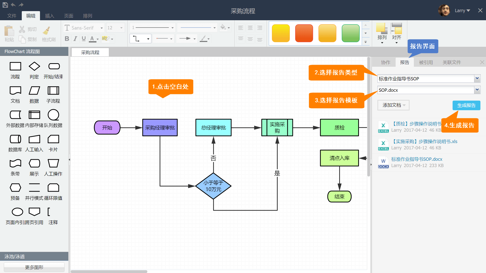
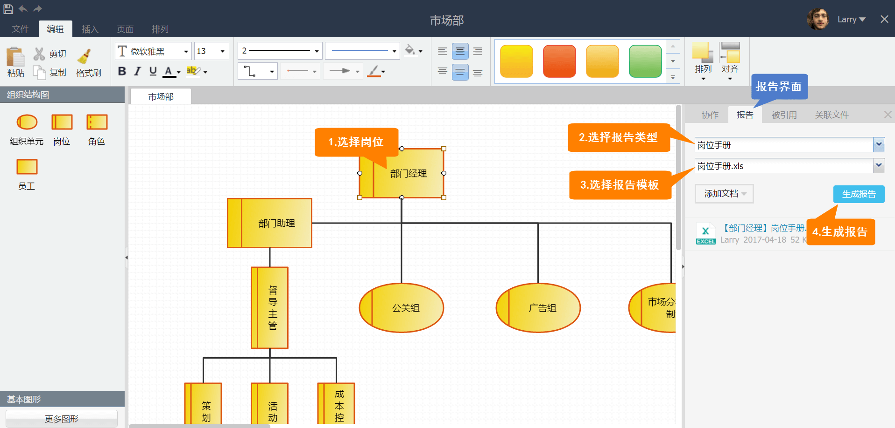
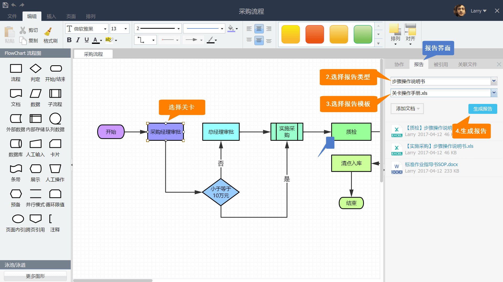

生成流程标准作业指导书-SOP
如下图所示，在流程设计界面，点击流程空白处，然后在右侧【报告】界面中，选择报告类型为【标准作业指导书-SOP】，选择报告模板为【SOP】，点击按钮【生成报告】，随即流程作业指导书就在下方生成了，点击即可下载。

生成岗位手册
如下图所示，在组织结构设计界面，选中【部门经理】岗位，然后在右侧【报告】界面中，选择报告类型为【岗位手册】，选择报告模板为【岗位手册】，点击按钮【生成报告】，随即【部门经理】岗位手册就在下方生成了，点击即可下载。

生成关卡作业指南
如下图所示，在流程设计界面，选中【采购经理审批】关卡，然后在右侧【报告】界面中，选择报告类型为【步骤操作说明书】，选择报告模板为【关卡操作手册】，点击按钮【生成报告】，随即【采购经理审批】步骤操作说明书就在下方生成，点击即可下载。

Created with the Personal Edition of HelpNDoc: Easily create iPhone documentation